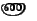
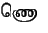
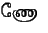
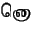
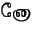
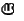
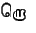
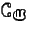

The single font wntml, is available in three sizes: 10, 12 and 17 points. The names are wntml10, wntml12, and wntml17 respectively.
In this document (and in idoc.itx), the following lines were used for loading the font:
\newfont{\tmlb}{wntml12}.
\newfont{\tmls}{wntml10}.
The command \tmlb refers to the font of size 12, and the command \tmls refers to the font of size 10 points.
This package also includes the MF and PK files for the font. Since the MF files are also present, you can use them to generate any other PK and TFM files you need, to get fonts that are transformed versions (scaled, slanted, etc) of the basic Washington Tamil font.
For numbers, it is usually sufficient to use the $ enclosing scope to make them print correctly, since a $ enters mathmode and uses the math fonts. For punctuation marks, the user needs to explicitly change fonts: example:
#tamil......{\rm ;}.......#endtamil.
The example in the previous section uses these methods.
As shown in table 2, the consonant-vowel forms follow certain modern tamil conventions. (I use the terms modern and archaic loosely, and they only reflect current tamil standards in India, other countries may not follow these.) It is possible to get the older alternate character forms that print out thus:
NA: 
Nai:
No: 
NO: 
nA:
nai:
no: 
nO: 
Lai:
RA: 
Ro: 
RO: 
To enable these forms, you need to edit the wntml.ifm file: better
make a copy, and name it wntmla.ifm, and edit the new file.
Search the wntmla.ifm file for the word ARCHAIC, and delete that word. You should see twelve such instances, corresponding to the characters above.
Once that is done, specify the new IFM file with the #tamilifm keyword, and all the above twelve consonant forms will print out as above. (See the user manual idoc.itx for exact details regarding the #tamilifm keyword.)
2009-12-04
ITRANS Home Page: http://www.aczoom.com/itrans/